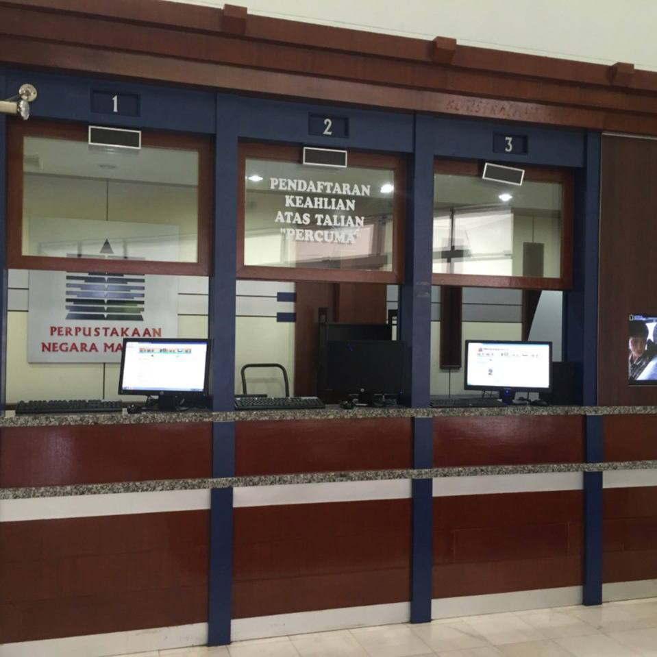
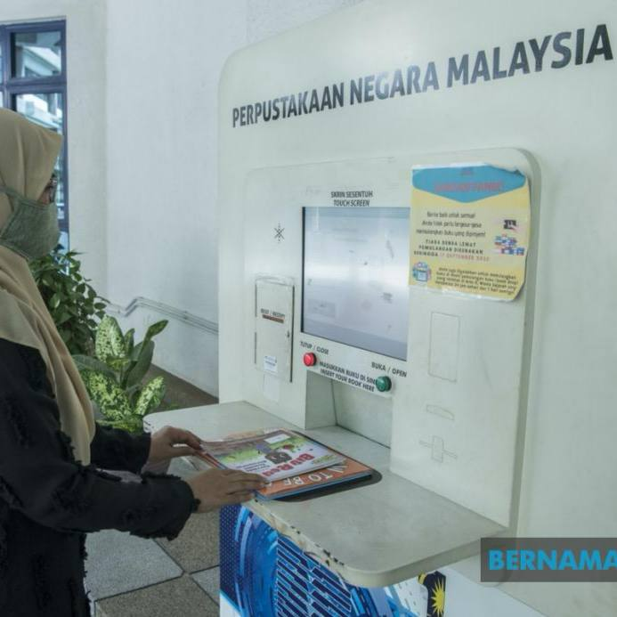

For the Public
-
 Reference Services
Librarians are available to help users search for information, resources, and references effectively.
-
Adult & Children's Lending
Borrow fiction, non-fiction, and children's books with ease through our membership program.
-
 Community Library Loan
Extending library materials and services to local community libraries nationwide.